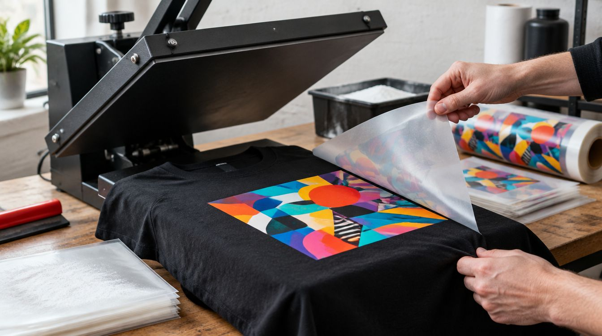

Tasarım filme basılıyor, ısıyla kumaşa kaynaşıyor. Pamuk, polyester ve karışım kumaşta fotoğraf, ince çizgi ve canlı renk; koyu kumaşta beyaz alt katman. Tek tişörtten ekip setine.

DTF (direct to film) tekstil baskının son yıllardaki en pratik yöntemi: tasarım önce özel bir filme basılıyor, üstüne toz yapıştırıcı alınıyor, sonra ısı presinde kumaşa aktarılıyor. Serigrafideki gibi renk başına kalıp yok, dijital baskıdaki gibi yalnız açık renkli pamuk şartı yok. Bir fotoğrafı siyah bir hoodie'ye, on renkli bir logoyu polyester bir forma tek seferde basabiliyoruz.
Baskı kumaşın üstünde ince ve esnek bir katman olarak duruyor; yıkamada çatlamıyor, ütüde dikkat gerektiriyor. Sert yüzeyler (cam, metal, seramik) bu yöntemin dışında; onlar için UV DTF kullanıyoruz.
Hazır tasarımlar. Birine dokunun — aşağıdaki stüdyoda açılır, üstünde istediğiniz gibi oynarsınız.
Rengi seçin, tasarımı sürükleyip büyütün, yazıyı kendiniz yazın — ya da kendi dosyanızı açın. Beğendiğinizde tek tuşla sipariş.
Stüdyo yükleniyor… Açılmazsa WhatsApp'tan yazın, tasarımı birlikte kuralım.
Önizleme baskının yerini, ölçüsünü ve rengini gösterir; kumaş dokusu ve ekran ayarları yüzünden gerçek ürün birebir aynı görünmeyebilir. Baskıdan önce size son bir görsel onayı gönderiyoruz. Dosyanız yüklenmiyor — tarayıcınızda kalıyor, sipariş mesajına indirdiğiniz önizlemeyi ekliyorsunuz.
Firmalar için DTF'nin anlamı basit: küçük adette bile temiz logo. Beş kişilik bir kafe ekibinin önlükleri, otuz kişilik bir şantiyenin yelekleri, iki yüz kişilik bir etkinliğin tişörtleri aynı film hattından çıkıyor. Kurumsal renk kodu filme birebir taşınıyor; lacivert, bordo ya da siyah kumaşta beyaz alt katman logonun rengini koruyor.
Tekrar siparişte aynı dosya yeniden basıldığı için ilk parti ile üçüncü parti arasında ton farkı olmuyor. Bedenleri, kumaşı ve baskı yerini (göğüs sol, sırt, kol) tek listede alıyor, ürünü tedarik edip basılı teslim ediyoruz.
Kişiye özel tarafta DTF'nin farkı fotoğraf basabilmesi. Doğum günü için çocukluk fotoğrafı, evlilik yıl dönümü için düğün karesi, bekarlığa veda için grup çizimi, aile buluşması için aynı tasarımın yirmi bedeni. Tasarımı biz çiziyoruz ya da gönderdiğiniz görseli baskıya hazırlıyoruz; koyu kumaşta nasıl duracağını basmadan önce ekranda gösteriyoruz.
Tek parça sipariş alıyoruz; çift tişörtü, anne-bebek takımı, arkadaş grubu hoodie'si gibi iki-üç parçalık işler en sık gelenler.
Kumaş: pamuk, polyester, pamuk-polyester karışımı, likralı kumaş; açık ve koyu renk fark etmiyor. Çok tüylü polar ve deri uygun değil.
Baskı alanı: göğüs sol küçük logo, göğüs orta, sırt tam en, kol ve ense etiketi; birden fazla alan aynı üründe basılabiliyor.
Renk ve detay: sınırsız renk, degrade, fotoğraf; ince çizgi ve küçük yazı için tasarımda asgari kalınlığı biz koruyoruz. Baskı esnek, kırılmıyor.
Bakım: tersten, düşük sıcaklıkta yıkama; baskının üstüne doğrudan ütü değil, tersten ütü. Kurutma makinesi baskının ömrünü kısaltıyor.
Kumaş türü, renk, bedenler ve baskı yeri tek listede alınıyor; ürünü biz tedarik ediyoruz ya da sizinkini basıyoruz.
Logo ya da görsel baskıya hazırlanıyor, ürün üstünde ekranda gösteriliyor; onaysız film basılmıyor.
Transfer basılıyor, ısı presiyle kumaşa aktarılıyor; ilk parça kontrol ediliyor, sonra seri devam ediyor.
Katlanıp paketleniyor; adede göre elden ya da kargoyla teslim.
Serigrafi her renk için ayrı kalıp ister; büyük adette ucuzlar, küçük adette ve çok renkli işte pahalıya gelir. DTF kalıpsızdır: on renkli bir fotoğrafı tek parçaya basabilirsiniz. Binlerce adetlik tek renkli işte serigrafi hâlâ mantıklı; onu söylüyoruz.
Doğru bakımla (tersten, düşük sıcaklık, kurutma makinesi yok) kumaşın kendisi kadar gidiyor. Sayı vermiyoruz çünkü yıkama alışkanlığı ve deterjan sonucu değiştiriyor; yanlış bakımda önce baskı değil kumaş yıpranıyor.
Basarız. Kumaş türünü önceden söyleyin; çok tüylü ya da su itici kaplamalı kumaşta tutmayabiliyor, o zaman uygun ürünü biz öneriyoruz.
Çıkar. DTF'de renklerin altına beyaz katman basılıyor; siyah hoodie'de fotoğraf beyaz tişörtteki gibi görünüyor. Provada bunu ekranda gösteriyoruz.
Tek adet. Toplu siparişte teslim süresi uzuyor, üretim yöntemi değişmiyor.
İletişim
Ürünü, kumaşı ve adedi yazın; tasarımı ürün üstünde aynı gün gösterelim.